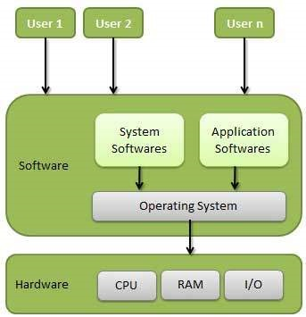

An operating system (OS) is the program that, after being initially loaded into the computer by a boot program, manages all of the other application programs in a computer. The application programs make use of the operating system by making requests for services through a defined application program interface (API). In addition, users can interact directly with the operating system through a user interface, such as a command-line interface (CLI) or a graphical UI (GUI). [Reference :tutorialspoint]
